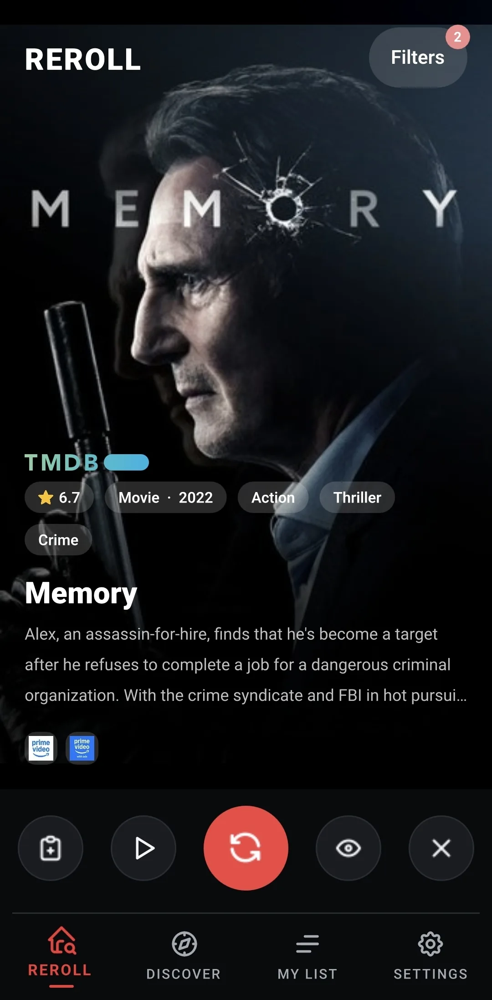
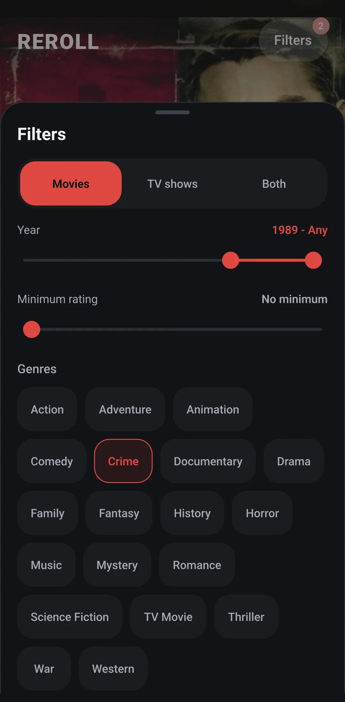
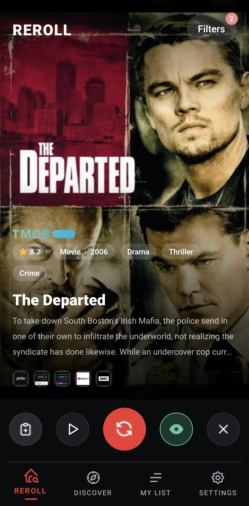
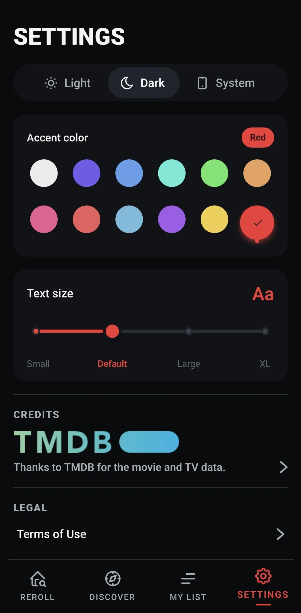
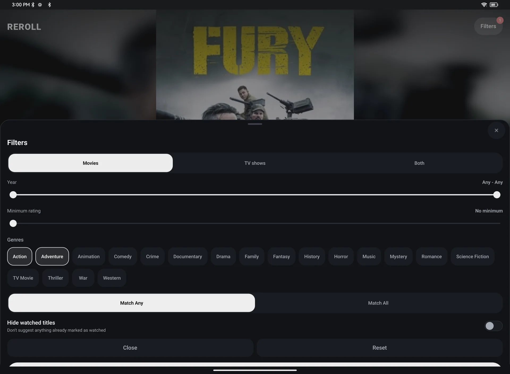

Can't decide what to watch? Reroll.
Reroll picks one film or TV show for you. Like it? Save it or watch the trailer. Not feeling it? Reroll for another. No endless grid of posters, and no forty minutes of scrolling before you give up.

One pick at a time
Set your mood, get a suggestion, and reroll until something sticks. On your phone and your tablet.
Phone






Tablet





Made to get out of the way
Open it, roll, decide, watch.
Tonight's pick
One film or show per screen, with its poster, rating, genres, a short story and where it's streaming. Watch the trailer in a tap.
Filters that match your mood
Movies, shows or both, the genres you like, a range of years and a minimum rating. Every reroll stays inside them.
Watchlist and watched
Save a pick for later, mark what you've seen so it stops coming back, and hide titles you never want to see again.
Discover
Trending and popular films and shows, browsing by genre and search, for nights when you'd rather look around.
Choose with Reroll, play with Makimedia
Reroll helps you decide what to watch. Makimedia plays the films and shows you already have, on your PC, phone, tablet and TV. Two small apps, made by the same person, both free.
Reroll suggests titles from TMDB's catalogue; it doesn't look inside your Makimedia library, and it doesn't provide or stream any films or shows. Your watchlist and settings stay on your device.